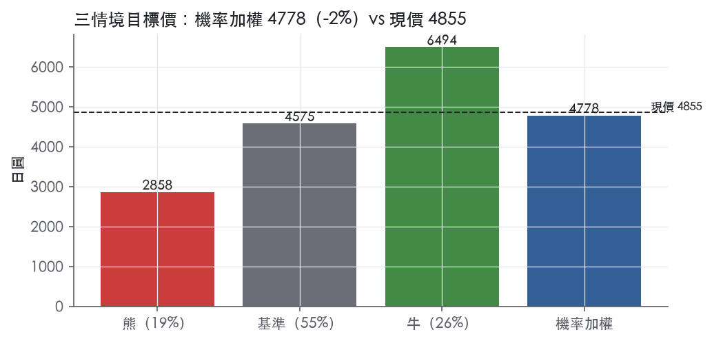
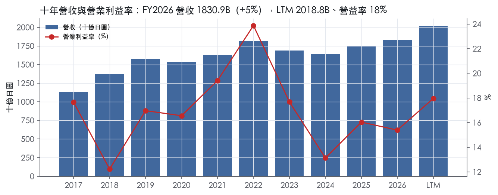
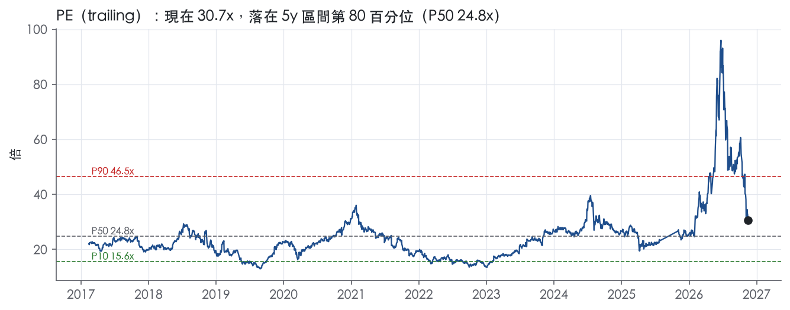
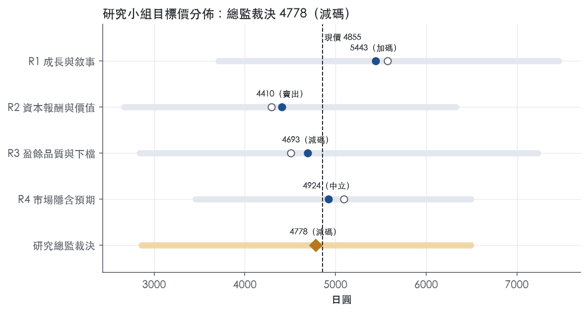
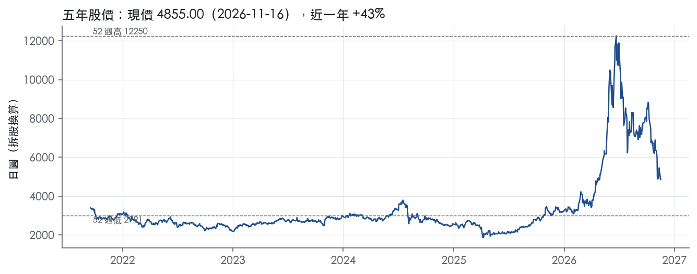

評等總表 › 未分類 › 6981.T
峰值利潤率已入價，一年後倍數收斂，偏空｜評等 減碼｜目標價 4778
| 報告日 | 評等 | 目標價 | 當時股價 | 超額報酬 |
|---|---|---|---|---|
| 2026-11-16 | 減碼 | 4,778 | 4,855 | -8.0% |
| 評等 | 減碼（邊界，鄰近中立） |
| 12 個月目標價 | 4778 日圓 |
| 現價 | 4855.00 日圓（2026-11-16） |
| 預期報酬 | 股價 -1.6%＋股息 1.4%＝總報酬 -0.1%；日股門檻 7.8%，超額 -8.0% |
| 估值方法 | P/E 20.0x，套在第 5–8 季的EPS（也就是一年後的未來四季） |
| 三情境 | 熊 2858／基準 4575／牛 6494 |
| 研究流程 | 四位研究員兩輪辯論＋研究總監裁決 |
| 資料來源 | EDINET、TDnet、J-Quants、Yahoo、FRED（全免費） |
峰值利潤率已入價，一年後倍數收斂，偏空（研究總監裁決，四位研究員兩輪辯論後）
評等 減碼（邊界，鄰近中立）｜12 個月目標價 4778 日圓（總監三情境機率加權 4748 與研究員中位數 4808 各半）｜現價 4855.00（2026-11-16）
預期報酬：股價 -1.6%＋股息 1.4%＝總報酬 -0.1%。日股門檻 7.8%，超額 -8.0%，離中立的分界不到三個百分點，屬邊界評等（落在其他級距的機率約三成）。
估值方法：P/E 20.0x，套在第 5–8 季的EPS（也就是一年後的未來四季）。三情境：熊 2858（19%）／基準 4575（55%）／牛 6494（26%）。
什麼會讓研究總監改變看法：FY2028 期初計畫仍為雙位數成長且營益率計畫不低於 23%，或日圓到 153 時單季營益率仍守 24% 以上，我把 Q5–Q8 營益率上調到 23%、倍數回到 21x 以上並轉中性；FY2027Q3 短信下修全年計畫或産業・その他用途年增驟降，熊機率上調。
| 過去四季（實際，FY2027Q2） | 未來四季 | 第 5–8 季 | 第 9–12 季 | |
|---|---|---|---|---|
| 營收（B） | 2,018.8B | 2,362.0B | 2,527.4B | 2,628.5B |
| 營收成長 | 14.5% | 17.0% | 7.0% | 4.0% |
| 營業利益率 | 18.0% | 23.0% | 21.0% | 19.0% |
| EPS（日圓） | 158.28 | 230.73 | 228.77 | 218.57 |
| EPS 成長 | 24.2% | 45.8% | -0.8% | -4.5% |
| 每股股息（日圓） | — | 0.00 | 0.00 | 0.00 |
| P/E（現價） | 30.7x | 21.0x | 21.2x | 22.2x |
| 股息殖利率（現價） | 1.4% | — | — | — |
過去四季為申報數字；預測為研究總監的假設、程式計算。倍數與殖利率都用現價計算，用來看現價對應各期獲利的高低。
| 情境 | 機率（歷史） | 故事 | 未來四季營收成長 | 第 5–8 季營益率 | 倍數 | 目標價 | 股價漲跌 |
|---|---|---|---|---|---|---|---|
| 熊 | 19%（16%） | 對應風險表第一條資料中心需求降溫與第三條產能過剩：下半期近計畫，FY2028 上半期代理店去庫存使營收轉負，270,000M 擴產成過剩固定成本，營益率回到 15%；谷底 EPS 上市場付帶上緣，故 21x 高於基準 | 10.0% | 15.0% | 21.0x | 2858 | -41.1% |
| 基準 | 55%（58%） | FY2027 小幅超越計畫；FY2028 期初計畫降到個位數成長、營益率計畫低於 FY2027 實績；日圓 153 與單價下跌使 Q5–Q8 營益率回到 21%，前瞻 EPS 持平，倍數由 P75–P90 收斂到 P50 上方 | 17.0% | 21.0% | 20.0x | 4575 | -5.8% |
| 牛 | 26%（27%） | 資料中心 MLCC 需求跨過 FY2028，代理店拉貨為真實終端需求，FY2028 期初計畫仍雙位數成長，市場續付接近前瞻帶 P90 的倍數 | 21.0% | 24.0% | 23.0x | 6494 | 33.8% |
目標價由程式依研究總監的驅動與倍數計算；機率由研究總監給定。括號內是歷史頻率：把這檔股票過去十年 12 個月報酬的波動形狀，置中在基準情境，結果落在各情境附近的比例。

四位研究員用不同方法各自估值，回應研究總監的質疑後交出第二輪，最後由總監逐點裁決。各研究員的主張見第七章，裁決理由見第八章，完整論證見《研究底稿》。
| 立場（一輪→二輪） | 加權目標價（一輪→二輪） | 評等（一輪→二輪） | 第二輪倍數 | 熊～牛目標價 | |
|---|---|---|---|---|---|
| R1 成長與敘事 | 看多→看多 | 5574→5443 | 加碼→加碼 | 24.0x | 3708～7463 |
| R2 資本報酬與價值 | 看空→看空 | 4296→4410 | 賣出→賣出 | 20.0x | 2670～6327 |
| R3 盈餘品質與下檔 | 看空→看空 | 4505→4693 | 減碼→減碼 | 20.0x | 2839～7231 |
| R4 市場隱含預期 | 中性→看空 | 5090→4924 | 中立→中立 | 20.0x | 3454～6494 |
| 研究總監裁決 | 看空 | 4778 | 減碼 | 20.0x | 2858～6494 |
目標價由程式依各自的驅動與倍數計算；評等＝機率加權總報酬 − 日股門檻。
村田製作所是一家以積層陶瓷電容（MLCC）等被動元件為核心、向下延伸至高頻模組、電池與感測器的電子零組件製造商。當社グループ（当社及び関係會社）は、電子部品並びにその関連製品の開発及び製造販売を主たる事業として行っております。產品分類為「コンポーネント（コンデンサ、インダクタ、ＥＭＩ除去フィルタなど）」「デバイス・モジュール（高周波モジュール、表面波フィルタ、リチウムイオン二次電池、センサなど）」及び「その他（ソリューションビジネス、ヘルスケア機器、機器製作など）」三つの事業別セグメント。客戶終端涵蓋智慧型手機、數據中心伺服器、汽車電動化／ADAS 與家電，是典型的「賣鏟子給所有做電子產品的人」商業模式。FY2026（2026年3月期）合併營收 1,830.86B，LTM（至FY2027Q2）已達 2,018.84B，顯示公司正處於 AI 伺服器驅動的被動元件需求上行週期。
公司三大分部中，コンポーネント（電容、電感、EMI濾波器）是營收與獲利的主力，デバイス・モジュール（高頻模組、電池、感測器）是第二引擎，其他分部（方案、健康機器、機器製作）規模很小。依最新決算短信（半年度）數字，コンポーネント當中間期營收 740,509 百萬円（740.5B），較去年同期增30.9%，占營收比重達67.9%；デバイス・モジュール營收 340,861 百萬円（340.9B），年增3.4%，占比31.2%；其他分部營收 9,394 百萬円（9.4B），占比0.9%。コンポーネント之下，コンデンサ（主要是MLCC）半年營收605,583百万円，年增33.1%，是單一最大產品線；インダクタ・ＥＭＩフィルタ半年營收134,926百万円，年增21.8%。デバイス・モジュール之下，高周波・通信（樹脂多層基板、高頻模組、表面波濾波器）半年營收198,474百万円、年減2.1%，是唯一衰退的產品線，主因スマートフォン向け樹脂多層基板及高周波モジュールが減少；エナジー・パワー（鋰電池、電源模組）半年營收78,685百万円、年增5.1%；機能デバイス（感測器、計時元件）半年營收63,702百万円、年增22.1%。研發費用分部拆分顯示コンポーネント FY2026 研發支出57,083百万円、デバイス・モジュール93,048百万円、其他8,739百万円，合計158,870百万円，反映デバイス・モジュール的技術強度高於營收占比。資本支出FY2026依分部為コンポーネント187,749百万円、デバイス・モジュール55,295百万円、その他4,734百万円，合計247,778百万円，顯示公司把擴產重心放在被動元件而非模組業務，應是為了鎖住數據中心MLCC需求。
公司採「半製品」集團內部供應鏈模式，自己不直接列出前幾大客戶，但按用途（終端應用）揭露營收結構，可視為客戶輪廓的替代指標。當中間連結會計期間用途別營收中，コンピュータ（含データセンター）半年營收235,110百万円，年增61.2%，是成長最快的用途，占比由16.2%升至21.6%；モビリティ半年營收268,751百万円、年增14.6%，占比24.6%；通信半年營收346,813百万円、年增5.6%，占比31.8%，仍是最大用途但占比下滑；家電半年營收71,645百万円、年減2.4%；産業・その他半年營收168,445百万円、年增39.8%。地區與通路方面，公司透過自家生產子公司（日本國內福井、出雲、富山、金澤、岡山等；海外中國無錫、深圳、新加坡、菲律賓、泰國、越南等）製造半成品，再由美國、中國、歐洲的販賣會社銷售給終端客戶與通路商。公司持有大量政策保有股（住友金属鉱山、京都フィナンシャルグループ、三井住友FG等金融與材料供應商），顯示其供應鏈與金融合作關係緊密，屬東證治理改革下需要逐步縮減的項目。10-K（有報）未揭露單一客戶集中度數字，判斷其客戶高度分散、無單一客戶依賴風險揭露義務觸發點。
過去四個季度（FY2026Q3至FY2027Q2），公司營收與營益率呈現「AI伺服器需求驅動加速成長」的軌跡。FY2026Q3營收467.45B、年增4.3%，營益率8.1%（is/dv 資料包，期別FY2026Q3）；FY2026Q4營收460.62B、年增11.8%，營益率回升至17.1%（資料包FY2026Q4）；FY2027Q1營收502.26B、年增20.7%，營益率19.6%（資料包FY2027Q1）；FY2027Q2（即決算短信揭露之「當中間連結會計期間」，2026年4-9月為半年度合計，單季數字見資料包）營收588.50B、年增20.9%，營益率擴大至25.1%（資料包FY2027Q2）。公司最新決算短信揭露的半年度（2026年4月-9月）合併數字為：營收1,090,764百万円，年增20.8%；營業利益245,907百万円，年增48.9%；税引前中間利益248,415百万円，年增42.1%；親會社所有者歸屬中間利益186,152百万円，年增40.6%。公司將此次高成長歸因於コンデンサがデータセンター向けを中心に幅広い用途で増加したことに加え、ＥＭＩ除去フィルタがデータセンターやモビリティ向けで、電源モジュールがデータセンター向けで増加した，加上為替変動（日圓較去年同期貶值13.33円）的助力。半年度營業現金流215,455百万円（較去年同期增47,722百万円），資本支出（有形固定資產取得）97,649百万円，財務活動現金流出146,693百万円主要是自己株式取得76,108百万円與配息63,710百万円。公司同時上修FY2027全年業績予想：營收由前次2,110,000百万円上修至2,260,000百万円，營業利益由430,000百万円上修至520,000百万円，親會社歸屬淨利由338,000百万円上修至396,000百万円，ＲＯＩＣ（稅後）預期由13.9%升至16.6%，匯率假設維持1日圓155円不變。
公司在中期方針2027中將AI與數位化列為核心成長驅動：「ＡＩの登場により、当社グループが2030年の世界観として想定する『デジタルツイン』の実現がより加速していく」，並以エッジデバイス・モビリティ・ＩＴインフラ為基盤事業，環境・ウェルネス・第三層事業為挑戦領域。公司訂出中期方針2027全社經營目標：營收2,000,000百万円、營業利益率18%以上、ＲＯＩＣ（稅後）12%以上，FY2026實績為營收1,830,856百万円、營益率15.4%、ROIC（稅後）9.7%，皆未達標。資本配置上，公司強調「ＡＩサーバー及び周辺機器における電子部品の搭載数の増加により、データセンター関連の需要が大きく拡大しております。今後も主力事業であるコンポーネント、デバイス・モジュールへ投資を継続」；最新決算短信對FY2027全年展望亦稱「データセンター関連需要のさらなる高まりにより、売上収益は前回予想を上回る見込み」。研發方面公司聚焦6G、AI驅動的高頻元件與次世代電子部品開發，並在コンポーネント領域量產全球首款1005M尺寸47μF MLCC。
判斷上，村田目前的成長引擎高度集中在數據中心MLCC與電源模組，這是過去四季營益率由8%急拉到25%的主因，但高周波・通信（手機相關）仍處於年減狀態，顯示公司成長結構正從智慧型手機單一依賴轉向AI伺服器與汽車電動化雙軌。P/E 30.7x、EV/EBITDA 14.9x 均處於過去五年80%以上分位（band.ev_ebitda），顯示市場已把AI伺服器的加速成長大幅計入股價，若數據中心需求成長斜率放緩，評等下修風險值得留意。中期方針2027的18%營益率目標與公司最新上修全年計畫（營益率約23%）相比已明顯超前，顯示本輪景氣循環的強度可能超出公司三年前設定目標時的預期。

村田的護城河評為窄：我們有把握未來 5 年 ROIC 大致維持在資本成本之上，但數字不足以支撐 10 年以上的把握。優勢主要來自材料到成品一貫生產帶來的成本與良率優勢，次要來自高可靠度用途的轉換成本。趨勢判為穩定而非變寬，因為本輪數據中心帶動的利潤率擴張是景氣與匯率疊加的結果，還不能證明競爭地位出現結構性改善。
成本優勢是主要來源。公司以材料到製品的一貫生產體制為基礎，在內部自行開發材料技術、商品設計技術、生產技術及共通技術，建構獨自的技術與平台。上游原料也由集團自製，Foshan Murata Materials 與 MF Material 的主要事業都是原料製造。規模上，FY2026 設備投資總額 247,778M 日圓，其中コンポーネント占 187,749M 日圓。製程領先也有實例：公司開始量產全球首款 1005M 尺寸（1.0×0.5mm）、靜電容量 47μF 的積層陶瓷電容。MLCC 的競爭核心是材料粉體與疊層製程的良率；一貫生產讓村田在高容值、小尺寸品項取得單位成本領先，同業短期難以複製。
轉換成本是次要來源，證據較弱。公司自述憑藉生產高可靠度、高性能產品的技術力，以及能大量生產同一品質產品的供給力，支撐電動車普及與汽車安全性提升。車用與資料中心客戶完成元件認證後，更換供應商就要重新驗證，因此有黏性；但原文沒有揭露認證週期或客戶留存數據，我們只給次要權重。
無形資產、網路效應、效率規模三類在材料中找不到可點名的證據，不列入。
數字支持窄護城河，不支持寬護城河。毛利率十年平均 40.6%、標準差 1.3%、區間 38.8% 至 42.3%，需求下行年度也守得住，這是成本優勢最直接的證據。ROIC 十年平均 10.5%、標準差 1.6%，平均只比資本成本代理值 10.1% 高 0.4 個百分點；有資料的 4 年中，只有 3 年高於資本成本。營業利益率標準差 3.1%、區間 12.2% 至 23.9%，景氣循環造成的獲利擺幅遠大於寬護城河公司應有的水準。
數字與成本優勢的主張有衝突：毛利率穩定，ROIC 卻長期貼近資本成本，代表高資本密集度吃掉了大部分優勢。資本支出占營收在 FY2019 為 18.5%，FY2026 仍有 13.8%。公司自己口徑的稅後 ROIC 更低，FY2025 為 10.0%、FY2026 為 9.7%，都未達中期目標的 12% 以上。
我們維持窄、不下修為無，理由有三。第一，ROIC 樣本只有 4 年，最低值 8.1%出現在需求低谷，並未深度跌破資本成本。第二，底稿的資本成本代理值看來採用美國公債殖利率；日債 10 年殖利率 2.841%明顯低於美債 5.1%，以日圓計的資本成本應低於 10.1%，實際超額報酬比底稿顯示的寬。第三，公司最新全年計畫已把稅後 ROIC 預期上修至 16.6%。
最大風險是 MLCC 的景氣與產能循環：數據中心需求一旦放緩，同業擴產會壓縮價格，營益率可能回到底稿的低檔區間。手機相關業務已在流失，高周波・通信半年營收 198,474M 日圓、年減 2.1%，主因是智慧型手機用樹脂多層基板與高頻模組減少。公司也自述，各國通商政策動向與不穩定的中東情勢使事業環境不透明。匯率是容易被誤讀為護城河的雜訊，本期成長有一部分來自日圓較去年同期貶值 13.33 日圓。中國同業若在高容值、小尺寸品項追上良率，成本優勢的核心就會被削弱，這是我們不給寬評級的關鍵原因。
目標倍數相對同業應持平，不給結構性溢價。護城河為窄，營益率標準差又有 3.1%，本輪 25.1%的單季營益率不應外推為常態。目前 P/E 30.7x 位於五年 80.3% 分位，估值時應以循環中值盈餘、而非峰值盈餘套用倍數。
| 指標 | 最新 | 十年平均 | 標準差 | 最低 | 最高 |
|---|---|---|---|---|---|
| ROIC | 10.6% | 10.5% | 1.6% | 8.1% | 12.5% |
| 毛利率 | 42.3% | 40.6% | 1.3% | 38.8% | 42.3% |
| 營業利益率 | 15.4% | 16.9% | 3.1% | 12.2% | 23.9% |
| FCF 利潤率 | 9.4% | 9.2% | 5.6% | -0.7% | 15.5% |
| ROE | 8.8% | 9.0% | 1.2% | 7.4% | 10.6% |
程式計算。資本成本代理值（10 年債＋5%）：10.1%；ROIC 平均減資本成本：0.4%；ROIC 有資料的 4 年中，高於資本成本 3 年。
LTM營業現金流／淨利1.64x、近三年平均2.15x、十年平均1.69x，三個燈號都是綠燈，盈餘有紮實的現金支撐。但FCF／淨利LTM僅0.73x、十年平均0.69x，是黃燈，低於0.90x綠燈門檻。這個缺口的原因很清楚：FY2026全年資本支出對營收比達13.8%，公司在半年報說明投資活動現金流出193.8B主要是「生産能力增強や生産棟の建設を中心とした有形固定資産の取得による支出」244.6B。FY2026年度CFO 425.22B，較前期減少26.68B，主因「法人所得税の支払による支出75,067百萬円、棚卸資産の増加額16,847百萬円」，抵銷當期利益233.78B與折舊攤銷178.2B的現金貢獻。應計比率LTM為-5.7%、十年平均-5.7%，都是綠燈且為負值，代表盈餘不是靠應計項目堆出來的，方向與現金流吃緊的訊號並不矛盾——錢是真花在蓋廠房、買設備，不是被做帳藏起來的。
半年報（FY2027H1）CFO 215.46B，較去年同期增加47.72B，主要靠中間利益186.06B及折舊攤銷91.55B，但營業債權增加66.14B、法人所得稅支付57.07B是抵銷項。
村田的決算短信沒有單獨揭露非GAAP調整欄（例如排除SBC、攤銷、重組等的「調整後利益」），其損益表直接以IFRS營業利益、稅前利益、歸屬母公司淨利呈現，FY2027H1營業利益245.91B、稅前利益248.42B、歸屬母公司中間利益186.15B。FY2026全年財報提到「表面波フィルタ製品に係る事業において、のれんの減損損失を計上した影響」拖累營業利益，但抵銷了「生産高増加に伴う操業度益やコストダウン」的增益因素，使營業利益僅微增0.8%至281.84B；這個商譽減損是一次性、非現金項目，應該在評估「本業經常性盈餘能力」時加回來看待。SBC／營收在計分表上是「—」，資料包沒有可用數字，本報告不就此下結論。
淨負債為負597.94B（即淨現金部位），淨負債／EBITDA為-1.09x（LTM）、近三年平均-1.41x、十年平均-1.25x，全部綠燈，顯示公司是淨現金公司、槓桿風險極低。利息保障倍數LTM 55.9x、十年平均342.5x，綠燈，付息能力完全不是問題。公司有有息負債僅3.26B（量化底稿對應半年報「借入金等の有利子負債の残高は3,261百万円」），信用評等AA+。資本配置面，FY2026財務活動現金流出221.81B，主要是「配当金の支払額が110,720百万円、自己株式の取得による支出が100,008百万円」；稀釋股數年變動LTM為-0.1%、近三年平均-1.1%，綠燈，回購確實在淨減少股數。（股利＋回購）／淨利LTM 41.2%、近三年47.7%、十年平均45.2%，皆為黃燈（低於50%綠燈門檻），但這是公司刻意保留資本用於ROIC投資與DOE政策，而非無法回饋的訊號——公司明確設定「2027年度のＤＯＥ５％に引き上げる」及「2027年度のＲＯＩＣ（税引後）12％以上」的目標。
計分表八項中，除FCF／淨利及股東回饋比率為黃燈外，其餘六項（CFO/淨利、應計比率、淨負債/EBITDA、利息保障、稀釋股數變動）全為綠燈，程式未標出獨立紅旗；以下逐一回應兩個黃燈：
無其他程式標出的紅旗需要回應。
盈餘品質整體中等偏健康：現金轉換穩健、應計比率乾淨、槓桿近乎零，估值可以直接用GAAP歸屬母公司淨利／EPS作為基礎，不需要因盈餘品質打太重的折扣。唯一要留意的是FCF持續低於淨利，若用EV/FCF或自由現金流折現估值，應反映目前高資本支出週期（FY2026 13.8%營收占比、FY2027全年計畫270.0B）對短期FCF的壓抑，而非直接套用淨利乘數。公司FY2027全年計畫（業績予想）已於決算短信上修至營業利益520.00B、歸屬母公司淨利396.00B，較半年前（2026年7月31日公布）的430.00B／338.00B明顯上修，顯示日股保守計畫慣例仍在，估值端的全年推算應以修正後計畫為基準並留意再上修空間，而非對盈餘品質本身打折。淨現金體質表示槓桿不構成倍數上限，目前P/E 30.7x、EV/EBITDA 14.9x處於5年高分位（80.3%、未提供對應EV/EBITDA分位但EV/Sales在85.7%分位），這反映的是成長與AI/資料中心需求重估，而非盈餘品質溢價，估值研究員應把倍數擴張歸因於需求面而非會計品質面。
| 項目 | LTM | 近三年 | 十年 | 燈號 | 規則 |
|---|---|---|---|---|---|
| 營業現金流／淨利 | 1.64x | 2.15x | 1.69x | 綠 | ≥1.00x 綠、<0.80x 紅 |
| 自由現金流／淨利 | 0.73x | 1.08x | 0.69x | 黃 | ≥0.90x 綠、<0.60x 紅 |
| 應計比率（(淨利−CFO)／平均總資產） | -5.7% | -7.9% | -5.7% | 綠 | ≤0.0% 綠、>5.0% 紅 |
| SBC／營收 | — | — | — | — | ≤3.0% 綠、>8.0% 紅 |
| 淨負債／EBITDA | -1.09x | -1.41x | -1.25x | 綠 | ≤1.50x 綠、>3.00x 紅 |
| 利息保障倍數（營業利益／利息） | 55.9x | 322.8x | 342.5x | 綠 | ≥8.00x 綠、<3.00x 紅 |
| 稀釋股數年變動 | -0.1% | -1.1% | -0.5% | 綠 | ≤0.0% 綠、>3.0% 紅 |
| （股利＋回購）／淨利 | 41.2% | 47.7% | 45.2% | 黃 | ≥50.0% 綠、<0.0% 紅 |
程式計算；燈號以 LTM（無則近三年平均）判定。
| 風險 | 觸發指標（看什麼數字、在哪裡看） | 對 EPS 的影響方向與粗略幅度 | 未來 12 個月發生機率（高／中／低） | 出處 |
|---|---|---|---|---|
| 數據中心需求降溫（成長引擎單一化） | 決算短信「用途別」コンピュータ營收年增率（目前61.2%）；季度營益率是否自25.1%回落 | 負向，大：半年度コンピュータ用途營收年增61.2%是拉動整體營收20.8%成長與營益率由18.3%升至22.5%的主因，一旦該用途年增率滑向個位數，營益率可能同步回吐 | 中 | |
| 匯率（日圓對日圓升值） | 日圓兌日圓現值（=158.23）vs. 公司業績予想假設匯率1日圓155円 | 負向，可量化：對日圓每升值1円，年間營業利益減少約4.5B円 | 中 | |
| 需求反轉時的產能過剩（當社自述「需要変動の増幅」風險） | 資本支出/營收比率（FY2026為13.8%，決算短信修正後全年設備投資270.0B）與庫存天數（棚卸資産534.2B，較期初520.5B增加） | 負向，中～大：公司自述「想定を超える需要変動」會使已手配的生產設備、人員、資材成為餘裕資產，侵蝕業績 | 中 | |
| 地緣政治／中華圈集中度（供應鏈與終端市場） | 公告中若出現中國出口管制、關稅變化，或半年報中華圈營收占比（目前約50%）變化 | 負向，大：連結売上收益的約50％、生産高的約20％を中華圏が占めており、中国の内外情勢による経営へのインパクトは高まっている | 低 | |
| 品質問題／供應中斷（調達・品質リスク） | 任何重大品質事故公告、仕入先供給停止公告 | 負向，大：公司自述重大品質問題「多額の損害賠償金の支払や売上の減少又は当社グループ製品に対する信頼の低下」，調達リスク則是「原材料・部材等の調達が困難となり...業績及び財政状況に重大な影響」 | 低 |
數據中心需求降溫是目前最大的風險，因為它直接對應過去四季盈餘加速的來源。コンポーネント半年營收740.5B、年增30.9%，其中コンデンサ（MLCC）半年營收605.6B、年增33.1%，公司明確歸因於「データセンター向けを中心に幅広い用途で増加」。コンピュータ用途營收半年235.1B、年增61.2%，占比由16.2%升至21.6%，是成長最快、也是權重急速上升的用途。公司已將FY2027全年業績予想大幅上修（營收由2,110.0B上修至2,260.0B，營業利益由430.0B上修至520.0B），理由是「データセンター関連需要のさらなる高まり」。這代表市場與公司自身的預期已經高度押注在這條單一成長軌道上，若AI資本支出週期降溫，營益率回吐的速度可能和上升一樣快。
匯率風險是公司自己量化過的，且目前匯率已經比公司業績予想假設更有利，一旦反轉影響立即可見。公司揭露「翌連結会計年度において為替変動が営業利益に及ぼす影響は、米ドルに対して円高方向に１円変動した場合に年間約4.5B円の減益と見ております」。目前日圓兌日圓158.23，公司FY2027業績予想假設維持1日圓155円不變，意味目前匯率對公司有利；若日圓快速升值回到155以下甚至更低，將直接侵蝕已上修的獲利預期。半年度數字顯示為替變動（日圓較去年同期貶值13.33円）對本期營益率擴張有實質貢獻。
需求反轉時的產能過剩是公司自己在風險章節點名的結構性弱點，因為被動元件生意的特性是先擴產能、後面對需求。公司明確寫道「想定を超える需要が急激に発生した場合には、顧客の要求に応じられず販売機会を逃し…一方、世界経済やエレクトロニクス産業全般の急激な変化により当社グループの製品の需要が予測を大幅に下回る事態となった場合には、手配した生産設備、人員、資材、製品等が余剰となり…重大な影響を及ぼす可能性があります」。FY2027修正後設備投資計畫270.0B、較前次255.0B上修，半年度資本支出97.6B主要用於「生産能力増強や生産棟の建設」，棚卸資産（存貨）由期初520.5B增至534.2B（財政状態計算書）。這代表公司正在加碼擴產跟上目前的需求斜率，一旦需求斜率放緩，存貨與固定成本的槓桿效果會反向發作。
地緣政治／中華圈集中度是公司自己評為「影響度：大」的外部環境風險，且揭露了具體的集中度數字。「当社グループ連結売上収益の約50％、生産高の約20％を中華圏が占めており、中国の内外情勢による経営へのインパクトは高まっております」。公司同時提到「中東情勢の緊迫化に伴うホルムズ海峡の通航制約等により、エネルギー価格や輸送コストの上昇等の直接的な影響が生じる可能性がある」。這條風險的觸發機率屬低（過去12個月沒有急性事件的明確前兆），但一旦觸發影響度屬大，列入監測清單是合理的。
品質問題／供應中斷合併為一條，因為兩者都屬於低機率、高尾部風險且都是公司自己在「事業遂行リスク」中列為「影響度：大」的項目。公司自述品質風險的影響度是「多額の損害賠償金の支払や売上の減少又は当社グループ製品に対する信頼の低下」，調達（供應鏈）風險則是「資材調達におけるリスクとしては、仕入先の事業運営上のトラブル、地政学リスクに起因する原材料・部材の調達難、災害…の発生に伴う原材料・部材等の供給停止や価格高騰が想定される」，且公司將調達リスク的發生頻度自評為「大」，比品質風險的「中」更需留意基本假設是否成立。
東證資本效率改革下的庫藏股與政策保有股處分節奏，可能是市場重新評等P/B、ROE的催化劑，但公司在風險章節完全沒提，只在業務概況揭露仍持有住友金屬鑛山、京都FG、三井住友FG等政策保有股。半年度財務活動現金流出中自己股取得76.1B（決算短信），若這個回購速度放緩或政策保有股處分不如預期，可能被市場解讀為資本配置效率停滯，進而壓縮目前已處於五年80%以上分位的P/E、EV/EBITDA倍數。
中期方針2027設定的全社營益率目標18%已被FY2027最新業績予想（修正後營益率約23.0%，520.0B/2,260.0B）大幅超越，但公司尚未更新中期目標或說明這是循環性超額達成還是結構性上調，存在「目標過時、市場誤判永續性」的溝通風險。若FY2028數據中心需求斜率放緩，營益率可能向18%的舊中期目標甚至更低回歸，而目前股價隱含的倍數可能仍錨定在23%附近的新常態，形成預期落差。
現價 4855.00 對應 trailing（過去四季）P/E 30.7x、EV/EBITDA 14.9x、EV/EBITA 22.6x、EV/Sales 4.1x、FCF 殖利率 2.4%。主要估值倍數 P/E 現在 30.7x，落在5 年區間第 80 百分位（P10／P50／P90 = 15.6x／24.8x／46.5x）。

把程式的機械基準預測放到現價下，市場付的前瞻倍數是：P/E（未來四季） 28.1x、P/E（第 5–8 季） 25.5x。反推 DCF 顯示市價隱含未來五年營收年成長 18.8%（WACC 9.0%、終值成長 3.0%、FCF 利潤率 9.8%，SBC 不加回）。
| 倍數 | 現在 | 5 年 P10 | 5 年 P50 | 5 年 P90 | 現在分位 | 全期 P50 |
|---|---|---|---|---|---|---|
| P/E | 30.7x | 15.6x | 24.8x | 46.5x | 80.3% | 22.7x |
| EV/EBITDA | 15.0x | — | — | — | — | 12.1x |
| EV/EBITA | 22.7x | 10.7x | 19.5x | 37.8x | 75.4% | 19.5x |
| EV/EBIT | 22.7x | 10.7x | 19.5x | 37.8x | 75.4% | 19.5x |
| EV/Sales | 4.1x | 2.3x | 2.9x | 6.1x | 85.7% | 2.9x |
| P/S | 4.4x | 2.5x | 3.1x | 5.5x | 88.2% | 2.9x |
| P/FCF | 41.9x | 17.4x | 24.9x | 73.0x | 72.4% | 30.0x |
trailing 倍數（股價 ÷ 過去四季）；分位以每個交易日計算。
（日股同業籃尚未建置：評等門檻用日股絕對門檻＝日本 10 年公債＋股權風險溢酬 5%，見首頁。）
事後實現前瞻倍數帶（P/E，2018-11-21..2025-11-19）：P10／P50／P90 = 14.9x／19.2x／23.4x。它是每個交易日的股價除以之後四季實際實現的指標；一年後，今天的第 5–8 季正是那時的未來四季，所以這條帶是 12 個月目標價的同口徑倍數。因為用的是事後實際而非當時預期，過去成長超乎預期的公司這條帶會偏低。
程式的機械基準（成長率從過去四季年增率三年收斂到 6%、利潤率持平）用 事後實現前瞻 P/E P50 估值得到 3664（-24.5%），市場現行前瞻倍數（現價 ÷ 基準 未來四季指標）一年後持平，套在基準 第 5–8 季指標得到 5354。這兩個數字只是參考點，不是本報告的目標價；研究員對這個定價的回應在第七章。
下表是每位研究員第一輪（各自獨立）與第二輪（回應研究總監的質疑後）的結果。目標價全由程式依各自的假設計算。
| 立場（一輪→二輪） | 加權目標價（一輪→二輪） | 評等（一輪→二輪） | 第二輪倍數 | 熊～牛目標價 | |
|---|---|---|---|---|---|
| R1 成長與敘事 | 看多→看多 | 5574→5443 | 加碼→加碼 | 24.0x | 3708～7463 |
| R2 資本報酬與價值 | 看空→看空 | 4296→4410 | 賣出→賣出 | 20.0x | 2670～6327 |
| R3 盈餘品質與下檔 | 看空→看空 | 4505→4693 | 減碼→減碼 | 20.0x | 2839～7231 |
| R4 市場隱含預期 | 中性→看空 | 5090→4924 | 中立→中立 | 20.0x | 3454～6494 |
| 研究總監裁決 | 看空 | 4778 | 減碼 | 20.0x | 2858～6494 |
目標價由程式依各自的驅動與倍數計算；評等＝機率加權總報酬 − 日股門檻。
分歧度：第一輪 加權目標價 4296～5574（區間＝現價的 26%）· 倍數 20～26x · 立場 看多×1、看空×2、中性×1；第二輪 加權目標價 4410～5443（區間＝現價的 21%）· 倍數 20～24x · 立場 看多×1、看空×3。

| 研究員 | 第二輪主張 | 堅持的理由 |
|---|---|---|
| R1 成長與敘事 | 溫和看多，倍數 24x，介於十年與五年本益比中位數之間。 | 不照計畫上調未來一年營收，因 FY2020、FY2023 高成長翌年都轉負。 |
| R2 資本報酬與價值 | 偏空，倍數 20x，略高於前瞻 P/E 中位數 19.2x。 | 本輪增益靠量與匯率，公司已把製品價格下跌列為減益因素。 |
| R3 盈餘品質與下檔 | 偏空，倍數 20x，高峰盈餘只配低倍數。 | 熊情境倍數 21x 高於基準，因為市場在谷底盈餘上付高倍數。 |
| R4 市場隱含預期 | 由中性轉偏空，倍數 20x，落在前瞻 P/E 中位數上方。 | 現價對計畫 EPS 218.80 已付高倍數，市場錯在峰值盈餘的持續性。 |
每位研究員的逐條回應與完整論證見《研究底稿》（6981.T_研究底稿_2026-11-16.docx）。
| 分歧點 | R1 | R2 | R3 | R4 | 什麼資料會分出勝負 |
|---|---|---|---|---|---|
| NTM 營收成長 | 15%：下半期剛好達成計畫 | 16% | 16%：達成後橫盤 | 17%：Q2 588.50B 已等於計畫下半期季均，匯率 158 優於 155 | 2027-01 底 Q3 短信：計畫是否再上修、Q3 營收對 588.50B |
| Q5–Q8 營收成長 | 7%：FY2020、FY2023 高成長翌年轉負 | 6% | 6% | 9%：資料中心結構 | 2027-04 底 FY2028 期初計畫年增率 |
| Q5–Q8 營益率 | 20.5% | 20%：回到中期目標 18% | 21%：匯率全額＋單價 | 21.5%：匯率只扣 0.5pp | FY2028Q1／Q2 單季營益率，日圓 153 時守不守 22% |
| 目標倍數與口徑 | 24x@ntm：trailing 10y P50–5y P50 之間 | 20x@q5_q8：前瞻帶 P50 略上 | 20x@q5_q8：高峰盈餘低倍數 | 20x@q5_q8：現價對計畫 EPS 已付 P75–P90 | 期初計畫公布後股價對計畫 EPS 的倍數 |
| 熊情境形狀 | 8／−3%、19／16%、21x→3708 | 8／−2%、20／16%、18x→2670 | 10／−6%、20／15%、21x→2839 | 13／−3%、21／19%、19x→3454 | 産業・その他年增自 39.8% 驟降、book-to-bill、FY2028 計畫轉負 |
1. NTM 營收成長：選 R4 的 17%。 四人經 G1／V1／Q1／E2 都確認：計畫 2,260,000M 減上半期 1,090,764M，隱含下半期年增約 26%（R1 推導），高於上半期 20.8%。分歧只剩「剛好達成」或「小幅超越」。證據偏超越：計畫隱含的下半期季營收與 Q2 的 588.50B持平，等於假設 Q2 後不再環比成長；計畫匯率 155 低於現值 158.23；公司已從 7 月的 2,110,000M 上修到 2,260,000M。R4 營收絕對誤差 2.1% 最小、營業利益誤差 +0.2%，是唯一不系統性偏低的來源（預測紀錄表）。R1 把匯率逆風全扣在 y1，但本行 158→153 是漸進路徑，NTM 平均與 155 相近（R4 E5），逆風主要落在 Q5–Q8。
2. Q5–Q8 營收成長：選 R1 的 7%。 基期是年增約 26% 的 FY2027 下半期，日圓 153 全年生效，本行美國成長 1.8 低於共識 2.4、指引為週期性訂單下修。R1 的公司特有證據最硬：前兩輪上行翌年都轉負，FY2020 −2.6%、FY2023 −6.9%（年度表）。R4 的 9% 貼近基準 8.8%，但他在 E2 已承認 FY2028 上半期降到個位數高段，再往後維持 9% 要コンピュータ用途續增六成，沒有證據。R1 營收紀錄勝過基準 59%，四人最高。
3. Q5–Q8 營益率：選 R3 的 21%。 y1 採 R4 的 23%：等於計畫 23.0%，上半期 22.5%、Q2 25.1%，計畫隱含下半期營益率低於 Q2（R4），達成不算樂觀。y2 分歧在匯率：R4 只對 155→153 扣 0.5pp，但 Q5–Q8 要比已實現的上半期平均 159.37；用有報敏感度每 1 円約 4.5B，R1 推導 159.37→153 年化約 29B，超過 1pp。短信已把「製品価格の値下がり」列為減益因素，現被操業度益與円安蓋住，第二年成長降到 7%、蓋子變薄。R3 兩項都扣，又因第二年營收仍成長、無操業度損失，不像 R2 直接回到 20%；R2／R3 營業利益預測系統性偏低 −4.8%／−3.3%（預測紀錄表），是不取 R2 的另一理由。y3 取 19%，向中期目標「営業利益率 18% 以上」收斂。
4. 目標倍數：選 R4 的 20x eps@q5_q8，退回 R1 的 24x@ntm。 劇本主尺是 eps@q5_q8，直接對事後實現前瞻帶 P50 19.2x／P75 21.3x／P90 23.4x。R1 自己寫一年後前瞻 EPS 接近持平，他的 24x 在 q5_q8 口徑仍約 24x，落在 P90 之上；對營益率仍高於中期目標、前瞻 EPS 不再成長的公司付 P90，與他引用的護城河「窄、不給結構溢價」矛盾。R4 的錨最完整：現價 4855.0 對 FY2027 計畫 EPS 218.80 已在 P75–P90（E4）；FY2028 期初計畫 12 個月內必定公布，日本期初計畫偏保守，降速那天就印進倍數；資料中心是帶期間沒有的結構，所以不回 P50。利率點名：R1 用「過去五年日債殖利率遠低於 2.841%」解釋不取 5y P50，R2 的均值回歸檢查列「利率方向不利」；兩人倍數都低於市場持平倍數，理由只能是個股因素，本案循環位置已足夠，利率不計。
5. 熊情境：選 R3 的形狀與 21x。 R4 的熊 Q5–Q8 營益率 19%，高於 FY2023 的 17.7%，不像需求反轉；R2 在谷底盈餘上壓到 18x，和 trailing 5y 帶 15.6x–46.5x所呈現的「谷底高倍數、高峰低倍數」循環形狀相反，是重複懲罰。R3 的熊接風險表第一、三條：FY2026 設備投資 247,778M 中コンポーネント占 187,749M，FY2027 計畫上修到 270,000M，固定成本集中於單一產品線，營益率 15% 落在 FY2024 13.1%與 FY2023 17.7% 之間。證據上接受 R4 的 E3：營業債権 328,159→392,270M 增幅小於季營收增幅，不算週期後段訊號；通路訊號只剩「代理店向け」MLCC 帶動産業・その他 +39.8%一條。
漂移與總經。 四人靠攏比例 12%–32%，每項修正都對應我的第一輪意見並附證據，無退回漂移。R4 轉偏空是 E4 事實更正的結果；R3 熊機率 24%→20% 是我要求拆掉重複計算。R3 對 Q2 的拒絕成立：有報風險章確有「10％を超える顧客グループは存在しないものの、依存度の高い取引先があります」，抄錄員的「未揭露」只對業務概況章成立。四人 macro_deviations 皆空，接受；R1 牛情境「日圓維持 160」屬本行下行路徑、與其量假設不相容，我不採他的牛。本裁決無總經偏離。
與機械基準不同的驅動：
目標倍數 20x，eps，q5_q8。錨：事後實現前瞻 P/E 帶 P50 19.2x 與 P75 21.3x 之間。高於 P50：コンピュータ用途占比 16.2%→21.6%是帶期間沒有的結構；不到 P75：Q5–Q8 營益率 21% 仍高於中期目標 18%、前瞻 EPS 對 NTM 持平，期初計畫降速後市場不會續付 P75–P90。它低於市場持平的 28.1x，但 28.1x 套在 18% 營益率的基準 EPS 上；換成計畫水準的盈餘，R4 的 20x 基準算出 4769、接近現價（第二輪結果表），我的 20x 只是對現行前瞻倍數的小幅收斂，理由是循環位置而非利率。同業：日股同業籃尚未建置，門檻為絕對 7.8%；護城河「窄、穩定」不給同業溢價；TDK、太陽誘電倍數四人都要而缺，列為待補。
現價對機械基準 Q5–Q8 EPS 的隱含倍數 25.5x 套在 18% 營益率上；換成計畫水準盈餘，市場付的只是約 20x 前瞻倍數（R4 20x 基準 4769≈現價）。市場付的不是離譜倍數，而是「23% 以上營益率與高個位數成長延續到 Q5–Q8」。差距主要在盈餘：Q5–Q8 營益率 21%（匯率 159.37→153、單價下跌失去量的掩護）加成長 7%，使一年後前瞻 EPS 對 NTM 持平；其次在倍數：期初計畫降速後由 P75–P90 收斂到 20x。立場偏空；程式評等若為減碼即一致；若為中立，是牛情境 26% 把期望值拉近門檻，但基準情境（55%）本身低於 7.8% 門檻，立場不變。
現價 4855.00 → 點估目標價 4575 → 機率加權目標價 4748 → 目標價 4778，差距拆成五段：成長順延 +499 日圓（市場現行倍數 28.1x 一年後持平、獲利照機械基準）；倍數差 -1545 日圓（總監倍數 20.0x vs 市場持平倍數 28.1x，同一機械基準預測）；盈餘差 +766 日圓（總監預測的第 5–8 季EPS 0.0B vs 機械基準 0.0B，同一倍數）；情境不對稱 +173 日圓（機率加權減點估）；研究小組平均 +30 日圓（總監機率加權 4748 與研究員第二輪中位數 4808 各半）。各段相加等於目標價減現價。本階段未接賣方共識，差距以市場隱含預期為對照。
| 驅動 | 機械基準 | 研究總監 | 差異 |
|---|---|---|---|
| 未來四季營收成長 | 11.7% | 17.0% | +5.3 pp |
| 第 5–8 季營收成長 | 8.8% | 7.0% | -1.8 pp |
| 第 9–12 季營收成長 | 6.0% | 4.0% | -2.0 pp |
| 未來四季營益率 | 18.0% | 23.0% | +5.0 pp |
| 第 5–8 季營益率 | 18.0% | 21.0% | +3.0 pp |
| 第 9–12 季營益率 | 18.0% | 19.0% | +1.0 pp |
| D&A／營收 | 9.2% | 8.2% | -1.0 pp |
| 資本支出／營收 | 13.0% | 13.0% | ＝ |
| SBC／營收 | 0.0% | 0.0% | ＝ |
| 稅率 | 24.3% | 24.3% | ＝ |
| 股數年變動 | -1.4% | -1.4% | ＝ |
研究總監只寫偏移，未寫的沿用基準。
| 期 | 營收 | 成長 | 營益率 | 營業利益 | EBITDA | EBITA | 淨利 | EPS | FCF | 期末淨負債 |
|---|---|---|---|---|---|---|---|---|---|---|
| 未來四季 | 2,362.0B | 17.0% | 23.0% | 543.3B | 737.0B | 543.3B | 416.4B | 230.73 | 303.0B | -782.4B |
| 第 5–8 季 | 2,527.4B | 7.0% | 21.0% | 530.8B | 738.0B | 530.8B | 406.9B | 228.77 | 285.6B | -949.5B |
| 第 9–12 季 | 2,628.5B | 4.0% | 19.0% | 499.4B | 714.9B | 499.4B | 383.2B | 218.57 | 257.0B | -1,087.9B |
程式依上表的驅動計算；季度用最近四季季節性分攤；不含營運資金變動。
估值方法：P/E 20.0x，套在第 5–8 季的EPS（也就是一年後的未來四季）。研究總監目標倍數的錨：事後實現前瞻 P/E 帶 P50 19.2x 與 P75 21.3x 之間：コンピュータ用途占比 16.2%→21.6% 是帶期間沒有的結構故高於 P50；Q5–Q8 營益率 21% 仍高於中期目標 18%、前瞻 EPS 對 NTM 持平，FY2028 期初計畫降速後不續付 P75–P90；低於市場持平 28.1x 的理由是循環位置而非利率。
計算：EPS（第 5–8 季） 228.77 × 20.0x → 點估目標價 4575（-5.8%）；隱含 P/E（未來四季）19.8x、P/E（第 5–8 季）20.0x、EV/EBITDA（第 5–8 季）9.8x、FCF 殖利率（第 5–8 季）3.6%。
總監三情境機率加權目標價 4748，研究員第二輪中位數 4808，兩者各半＝目標價 4778；預期報酬 股價 -1.6%＋股息 1.4%＝總報酬 -0.1%；減評等門檻 7.8%（日股絕對門檻 7.8%（日本 10 年公債 2.84%（2026-11-12）＋股權風險溢酬 5%；日股同業籃尚未建置））＝超額報酬 -8.0% → 評等 減碼（超額 >+15% 買進、+5～+15% 加碼、±5% 中立、−5～−15% 減碼、<−15% 賣出）。同一份資料重開研究小組，超額約有正負四個百分點的雜訊（一個標準差，二十檔實測）；以此估計，評等落在其他級距的機率約三成。超額離中立的分界不到三個百分點，應視為邊界評等。
| 情境 | 機率 | 未來四季成長 | 第 5–8 季成長 | 第 5–8 季營益率 | EPS（第 5–8 季） | 倍數 | 目標價 |
|---|---|---|---|---|---|---|---|
| 熊 | 19% | 10.0% | -6.0% | 15.0% | 136.10 | 21.0x | 2858 |
| 基準 | 55% | 17.0% | 7.0% | 21.0% | 228.77 | 20.0x | 4575 |
| 牛 | 26% | 21.0% | 12.0% | 24.0% | 282.36 | 23.0x | 6494 |
| 主張 | 驗證日 | 看哪個數字 | 門檻 |
|---|---|---|---|
| FY2027Q3 決算短信不下修全年營業利益計畫，且 Q3 單季營收不低於 Q2 | 2027-02-15 | FY2027 全年營業利益計畫（決算短信）；FY2027Q3 單季売上収益 | 計畫 >= 520.00B 且 Q3 營收 >= 588.50B |
| FY2028 期初計畫顯示成長降到個位數、營益率計畫低於 FY2027 實績 | 2027-05-15 | FY2027 決算短信之 FY2028 業績予想：売上収益年增率、営業利益率 vs FY2027 實績 | 年增 <= 10% 且 計畫營益率 < FY2027 實績 |
| FY2028Q2 單季營業利益率回落至 22% 以下 | 2027-11-15 | <= 22% | |
| FY2028 上半期コンピュータ用途營收年增率自 61.2% 掉檔 | 2027-11-15 | FY2028 半期決算短信 用途別 コンピュータ 年增率 | <= 30% |
到期由程式結算（第 5 階段帳本）。
| 期 | 營收 | 成長 | 毛利率 | 營益率 | EBITDA | 淨利 | EPS | CFO | FCF | ROIC | 淨負債 | 稀釋股數 |
|---|---|---|---|---|---|---|---|---|---|---|---|---|
| FY2017 | 1,135.5B | — | — | 17.6% | — | 156.1B | 81.54 | 243.9B | — | — | — | 1.9B |
| FY2018 | 1,371.8B | 20.8% | — | 12.2% | — | 146.1B | 76.21 | 225.2B | — | — | — | 1.9B |
| FY2019 | 1,575.0B | 14.8% | — | 17.0% | — | 206.9B | 107.82 | 279.8B | -11.7B | — | — | 1.9B |
| FY2020 | 1,534.0B | -2.6% | — | 16.6% | — | 183.0B | 95.35 | 350.3B | 68.7B | — | — | 1.9B |
| FY2021 | 1,630.2B | 6.3% | — | 19.4% | — | 237.1B | 123.50 | 373.6B | 176.9B | — | — | 1.9B |
| FY2022 | 1,812.5B | 11.2% | — | 23.9% | — | 314.1B | 163.65 | 421.5B | 268.7B | — | -401.0B | 1.9B |
| FY2023 | 1,686.8B | -6.9% | 39.9% | 17.7% | 467.8B | 243.9B | 128.64 | 277.6B | 80.1B | 12.5% | -357.4B | 1.9B |
| FY2024 | 1,640.2B | -2.8% | 38.8% | 13.1% | 391.3B | 180.8B | 95.72 | 489.6B | 253.4B | 8.1% | -569.2B | 1.9B |
| FY2025 | 1,743.4B | 6.3% | 41.2% | 16.0% | 453.0B | 233.8B | 125.08 | 451.9B | 259.1B | 10.9% | -622.7B | 1.9B |
| FY2026 | 1,830.9B | 5.0% | 42.3% | 15.4% | 460.0B | 233.9B | 127.65 | 425.2B | 173.0B | 10.6% | -650.4B | 1.8B |
EDINET 有價證券報告書 XBRL（舊年度 US GAAP 公司只有經營指標摘要）；每股數據已依拆股換算到現在股數基準。EBITDA 空白＝該年沒有折舊攤銷（舊年度 US GAAP 公司的 EDINET 摘要沒有這一行）。
| 期 | 期末 | 推導 | 營收 | 毛利率 | 營益率 | EBITDA | 淨利 | EPS | CFO | FCF | 現金 | 總債務 |
|---|---|---|---|---|---|---|---|---|---|---|---|---|
| FY2024Q2 | 2023-09-30 | 442.7B | 40.5% | 20.1% | 131.7B | 75.1B | 39.73 | 132.3B | 78.3B | 521.8B | 112.5B | |
| FY2024Q3 | 2023-12-31 | 439.4B | 38.5% | 17.3% | 122.3B | 49.4B | 26.12 | 134.3B | 71.3B | 533.0B | 112.6B | |
| FY2024Q4 | 2024-03-31 | 390.4B | 37.0% | 0.1% | 45.1B | 6.3B | 3.35 | 163.7B | 118.6B | 622.0B | 52.8B | |
| FY2025Q2 | 2024-09-30 | — | — | — | — | — | — | — | — | 571.7B | 3.2B | |
| FY2025Q3 | 2024-12-31 | 448.0B | — | 17.0% | — | 71.0B | 38.11 | 107.5B | 53.4B | 573.7B | 3.2B | |
| FY2025Q4 | 2025-03-31 | 411.9B | — | 11.1% | — | 32.5B | 17.52 | 128.4B | 83.3B | 625.1B | 2.4B | |
| FY2026Q1 | 2025-06-30 | 416.2B | — | 14.8% | — | 49.7B | 26.83 | 40.0B | — | 519.6B | 2.4B | |
| FY2026Q2 | 2025-09-30 | 486.6B | — | 21.3% | — | 82.7B | 44.94 | 127.7B | — | 582.4B | 2.5B | |
| FY2026Q3 | 2025-12-31 | 467.5B | — | 8.1% | — | 25.0B | 13.91 | 114.1B | — | 582.2B | 2.5B | |
| FY2026Q4 | 2026-03-31 | 460.6B | — | 17.1% | — | 76.6B | 41.97 | 143.4B | — | 653.7B | 3.3B | |
| FY2027Q1 | 2026-06-30 | 502.3B | — | 19.6% | — | 81.4B | 44.70 | 42.2B | — | 557.5B | 3.3B | |
| FY2027Q2 | 2026-09-30 | 588.5B | — | 25.1% | — | 104.8B | 57.70 | 173.3B | — | 600.6B | 2.6B |
日本財報是年初至今的累計數：單季＝累計相減（Q2＝6 個月−3 個月、Q4＝年度−9 個月）；第 1、3 季多半不揭露現金流量表，單季現金流常空白，LTM 現金流用半年度拼。

本報告由 equity-desk 多代理系統產出，建置中版本，僅供內部研究與方法驗證，不構成投資建議。所有數字以 datapack.json 為準。